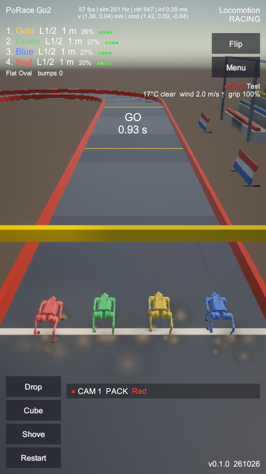
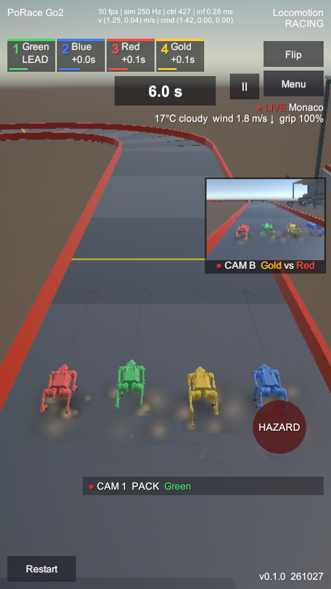
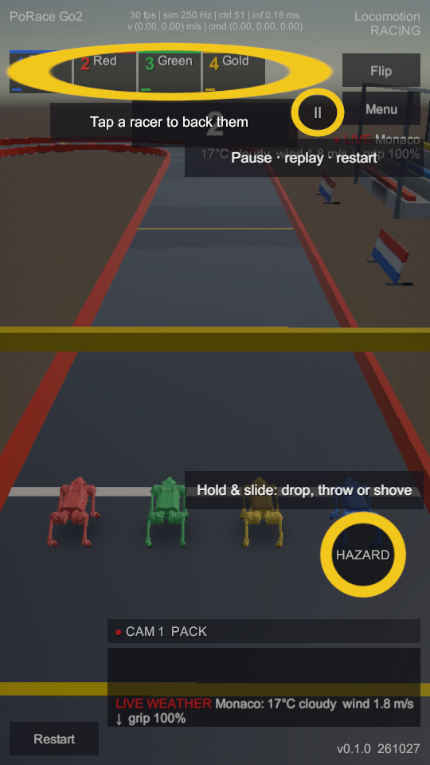
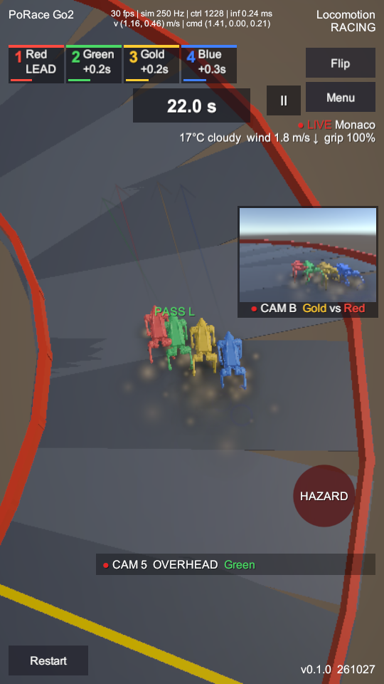
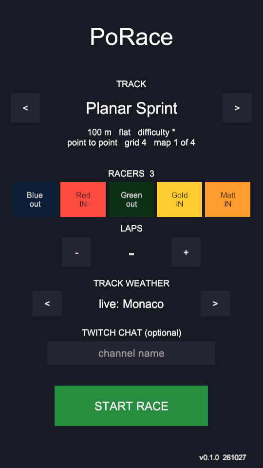
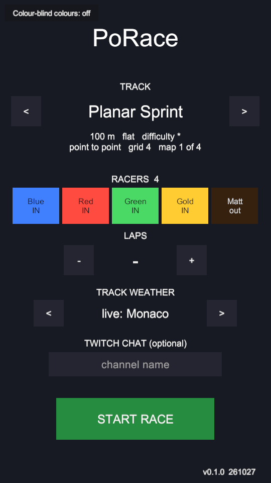

PoRace UI, round 2 proposals (C1–C10)
Build 261027, Windows player, portrait 540×960 (9:16), Flat Oval seed 3. "Before" captures are the 261026 H-phase HUD and the roster menu, taken from earlier reports.
Race HUD


First race: coach marks

PoRace.coachSeen; -coach forces them).
Menu


Checks
| Check | Result |
|---|---|
UiSelfTest (-raceTest, all race scenes + menu) | ok in Menu, Track01x4, Track02, Track03, Track04 (7–9 fields, 6–13 buttons); exits 3 on a broken binding |
| Text scale (ShotProbe, 11 pt minimum on 720p@320 / 1080p@420 / 1440p@560) | First pass: 4 labels under 11 pt + 1 overflow. Fixed: PiP label 17→22, weather 19→22 (box 330→400), intent tags 20→22, menu version 20→22, coach caption box widened. Left: the developer telemetry line (16, TAB toggles it). |
| Zero-scroll | All controls on one screen at 9:16; no ScrollRect anywhere. |
| Not captured | Pause sheet, landscape (tablets), haptics (Android) — need input or a device. |